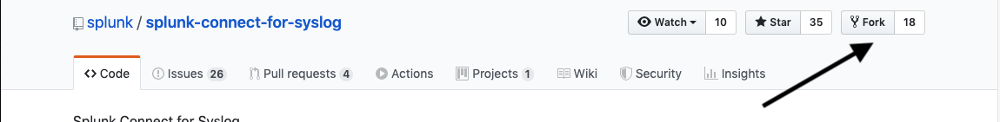
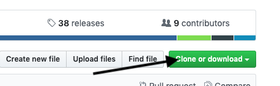
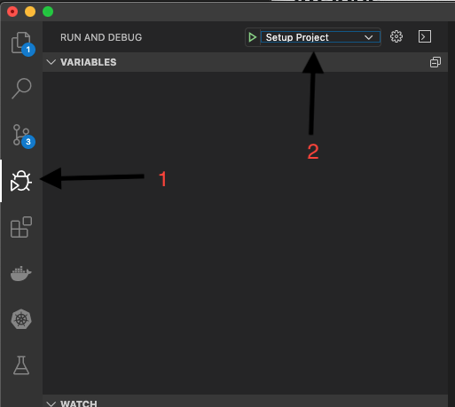
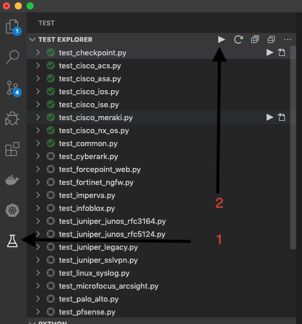

Development setup (BETA)¶
Get Docker¶
Development requires Docker desktop available for windows + and mac or Docker CE available for Linux. Visit (Docker)[https://www.docker.com/get-started] for download instructions
Setup VS Code IDE¶
VS Code provides a free IDE experience that is effective for daily development with SC4S. Visit (Microsoft)[https://code.visualstudio.com/docs/introvideos/basics] to download and install for your plaform (windows/mac/linux)
Fork and Clone the github repository¶
Visit our repository at (Github)[https://github.com/splunk/splunk-connect-for-syslog] and “fork” our repository. This will allow you to make changes and submit pull requests.

Click the clone icon and select the location

Setup the project and install requirements¶
The following steps are required only on the first time run.
- Install VS Code Extensions S
- Python
- Test Explorer
- “Python Test Explorer”
- From the terminal menu select “Run Task”
- Select “Setup step 1: python venv” then “go without scanning output”
- From the terminal menu select “Run Task”
- Select “Setup step 2: python requirements” then “go without scanning output”

Click the test lab icon¶
- Run all tests. Icons on each test will turn green or red to indicate pass or fail. Though VS Code does not show the status of any given test until all tests complete in the test tree, you can select “Show test output” near the top of the test directory tree to see the terminal output of each test as it runs in the “Output” pane.
